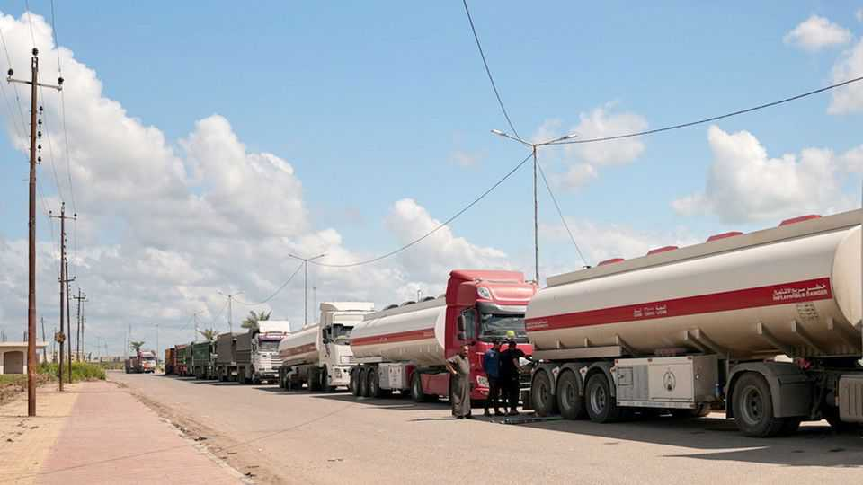
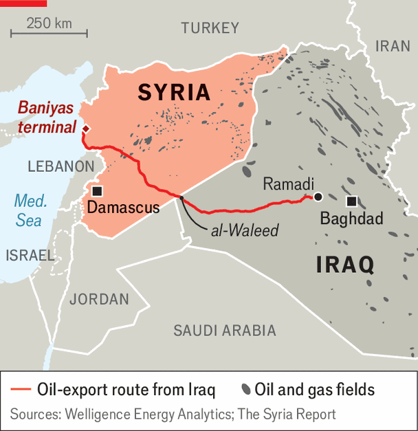

Syria is an unexpected beneficiary of the Gulf war
The revival of an old oil-export route from Iraq to the Mediterranean helps Syria’s new regime
June 11th 2026

These days the 860km-long road from Ramadi in Iraq to western Syria is lined with lorries heaving with oil. They rumble past ancient ruins and deserted villages before emptying their tanks at the Baniyas terminal on Syria’s Mediterranean coast. They then return to Iraq to fill up and make the journey again (see map).
The closure of the Strait of Hormuz means the oil giants of the Middle East are scrambling for new routes to get their product to global markets. Saudi Arabia, the second-largest oil producer in the world, is relying on an existing pipeline to the Red Sea. The United Arab Emirates is expanding an outbound line to the Gulf of Oman. But Iraq, which is the world’s sixth-largest producer, has been stymied by geography. It is frantically searching for a way to shift its 4m barrels of oil a day. The current answer is Syria.

The country has become an unlikely winner. The Hormuz blockage forced Iraq to slash oil production by 80% in March, as its storage tanks filled up. Iraq’s state firm in charge of oil exports, SOMO, has given three firms the job of trucking 650,000 tonnes of oil per month out of the country. The Syrian route is shorter than those through Jordan or Turkey, and takes the oil straight to the Mediterranean.
Iraq’s rulers are wary of Ahmed al-Sharaa’s new government in Syria, mindful of his time waging jihad during the 2000s. Some of the Shia militias that continue to dominate the Iraqi state fought for Syria’s former dictator, Bashar al-Assad, against Mr Sharaa and his allies. But commercial interests beat sectarian mistrust. Syria’s Sunni militants, now pillars of government, are providing police escorts for the thousands of Iraqi Shia lorry drivers as they go through the al-Waleed crossing, open for the first time in a decade.
But there are practical limits. The tankers need petrol, too. Some of the oil is heavier and more viscous; it needs heating for storage and pumping at the terminal. Storage at Baniyas is limited. Iraq would like to send even more oil through this westward channel, but the trucking operation is hard to scale up. The thousand-odd lorries a day are clogging up Baniyas’s pumping facilities. It is a far slower route than a pipeline.
Still, Syria is delighted. This Iraqi oil helps fire up some of its own power plants that rely on Russian oil which, in turn, replaced oil from Iran that had kept Syria going during its past decade of civil war. Syria’s own vast but ravaged oilfields will take years—and many millions of dollars—to be resuscitated. Its new regime seems more interested in exploring new fields and reconnecting with American oilmen than in renovating old ones.
Meanwhile, it is exulting in this rare inflow of cash. It is charging a transit fee. Its new and expanded border authority gets a cut. The rest goes to the Syrian Petroleum Company, a new state-backed firm, whose subsidiaries manage the storage and pumping of oil onto tankers at Baniyas. Another private firm handles the merry-go-round of lorries.
So far the sums are relatively modest. Estimates of daily revenue range from $1m to $2m. The thousand-odd lorries crossing the desert every day carry only about 5% of pre-war Iraqi oil exports. But this is enough to keep everyone relatively happy and frees up much needed storage space in Iraq.
The revived oil-export corridor through Syria, long shut off from the world, will give the new regime in Damascus a strategic lever once a new pipeline is built (much of the old Syrian one is inoperable or was destroyed), at a cost of at least $4bn.
Until then, with Hormuz blocked, the new route may become crucial and Syria could become an important transit hub. The closure of Hormuz has shown the oil-rich states of the Middle East that they need to diversify their transport networks. If Syria could upgrade its oil infrastructure and build new pipelines fast, it could find a lucrative spot for itself on the world’s energy map. Its first task would be to increase its storage capacity at Baniyas. If Syria manages to get its oilfields up and running, new markets for its products may open, drawing in desperately needed foreign investment. The estimated cost of Syria’s overall reconstruction is at least $200bn. But in the short run, the country is a rare beneficiary of the Iran war. ■
Sign up to the Middle East Dispatch, a weekly newsletter that keeps you in the loop on a fascinating, complex and consequential part of the world.